Question:1
Take three non-collinear points A, B and C on a page of your notebook. Join AB, BC and CA. What figure do you get? Name the triangle. Also, name
(i) the side opposite to ∠B
(ii) the angle opposite to side AB
(iii) the vertex opposite to side BC
(iv) the side opposite to vertex B.
Solution:

The figure that we get is that of a triangle.
The name of the triangle is
(i) The side opposite to
is AC.
(ii) The angle opposite to AB is
.
(iii) The vertex opposite to BC is A.
(iv) The side opposite to the vertex B is AC.
Question:2
Take three collinear points A, B and C on a page of your note book. Join AB, BC and CA. Is the figure a triangle? If not, why?
Solution:
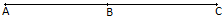
No, the figure is not a triangle. By definition, a triangle is a plane figure formed by three non-parallel line segments.
Question:3
Distinguish between a triangle and its triangular region.
Solution:
A triangle is a plane figure formed by three non-parallel line segments, whereas, its triangular region includes the interior of the triangle along with the triangle itself.
Question:4
In Fig., D is a point on side BC of a ∆ABC. AD is joined. Name all the triangles that you can observe in the figure. How many are they?
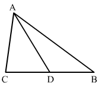
Solution:
We can observe the following three triangles in the given figure:
1. ABC
2. ACD
3. ADB
Question:5
In Fig., A, B, C and D are four points, and no three points are collinear. AC and BD intersect at O. There are eight triangles that you can observe. Name all the triangles.
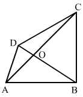
Solution:
The eight triangles that can be observed in the given figure are as follows:
Question:6
What is the difference between a triangle and triangular region?
Solution:
A triangle is a plane figure formed by three non-parallel line segments, whereas, a triangular region is the interior of a triangle along with the triangle itself.
Question:7
Explain the following terms:
(i) Triangle
(ii) Parts or elements of a triangle
(iii) Scalene triangle
(iv) Isosceles triangle
(v) Equilateral triangle
(vi) Acute triangle
(vii) Right triangle
(viii) Obtuse triangle
(ix) Interior of a triangle
(x) Exterior of a triangle.
Solution:
(i) A triangle is a plane figure formed by three non-parallel line segments.
(ii) The three sides and the three angles of a triangle are together known as the parts or elements of that triangle.
(iii) A scalene triangle is a triangle in which no two sides are equal.

(iv) An isosceles triangle is a triangle in which two sides are equal.
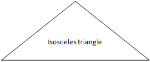
(v) An equilateral triangle is a triangle in which all three sides are equal.
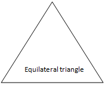
(vi) An acute triangle is a triangle in which all the angles are acute (less than 90
).

(vii) A right angled triangle is a triangle in which one angle is right angled, i.e 90
.

(viii) An obtuse triangle is a triangle in which one angle is obtuse (more than 90
).

(ix) The interior of a triangle is made up of all such points that are enclosed within the triangle.
(x) The exterior of a triangle is made up of all such points that are not enclosed within the triangle.
Question:8
In Fig., the length (in cm) of each side has been indicated along the side. State for each triangle whether it is scalene, isosceles or equilateral:
.png)
Solution:
(i) This triangle is a scalene triangle because no two sides are equal.
(ii) This triangle is an isosceles triangle because two of its sides, viz. PQ and PR, are equal.
(iii) This triangle is an equilateral triangle because all its three sides are equal.
(iv) This triangle is a scalene triangle because no two sides are equal.
(v) This triangle is an isosceles triangle because two of its sides are equal.
Question:9
In Fig., there are five triangles. The measures of some of their angles have been indicated. State for each triangle whether it is acute, right or obtuse.
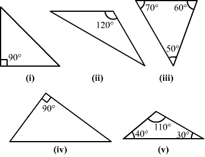
Solution:
(i) This is a right triangle because one of its angles is 90.
(ii) This is an obtuse triangle because one of its angles is 120, which is greater than 90.
(iii) This is an acute triangle because all its angles are acute angles (less than 90).
(iv) This is a right triangle because one of its angles is 90.
(v) This is an obtuse triangle because one of its angles is 110, which is greater than 90.
Question:10
Fill in the blanks with the correct word/symbol to make it a true statement:
(i) A triangle has ....... sides.
(ii) A triangle has ....... vertices.
(iii) A triangle has ....... angles.
(iv) A triangle has ....... parts.
(v) A triangle whose no two sides are equal is known as .......
(vi) A triangle whose two sides are equal is known as .....
(vii) A triangle whose all the sides are equal is known as .......
(viii) A triangle whose one angle is a right angle is known as .......
(ix) A triangle whose all the angles are of measure less than 90° is known as .......
(x) A triangle whose one angle is more than 90° is known as ......
Solution:
(i) three
(ii) three
(iii) three
(iv) six (three sides + three angles)
(v) a scalene triangle
(vi) an isosceles triangle
(vii) an equilateral triangle
(viii) a right triangle
(ix) an acute triangle
(x) an obtuse triangle
Question:11
In each of the following, state if the statement is true (T) or false (F):
(i) A triangle has three sides.
(ii) A triangle may have four vertices.
(iii) Any three line-segments make up a triangle.
(iv) The interior of a triangle includes its vertices.
(v) The triangular region includes the vertices of the corresponding triangle.
(vi) The vertices of a triangle are three collinear points.
(vii) An equilateral triangle is isosceles also.
(viii) Every right triangle is scalene.
(ix) Each acute triangle is equilateral.
(x) No isosceles triangle is obtuse.
Solution:
(i) True.
(ii) False. A triangle has three vertices.
(iii) False. Any three non-parallel line segments can make up a triangle.
(iv) False. The interior of a triangle is the region enclosed by the triangle and the vertices are not enclosed by the triangle.
(v) True. The triangular region includes the interior region and the triangle itself.
(vi) False. The vertices of a triangle are three non-collinear points.
(vii) True. In an equilateral triangle, any two sides are equal.
(viii) False. A right triangle can also be an isosceles triangle.
(ix) False. Each acute triangle is not an equilateral triangle, but each equilateral triangle is an acute triangle.
(x) False. An isosceles triangle can be an obtuse triangle, a right triangle or an acute triangle.
Question:12
Two angles of a triangle are of measures 105° and 30°. Find the measure of the third angle.
Solution:
Question:13
One of the angles of a triangle is 130°, and the other two angles are equal. What is the measure of each of these equal angles?
Solution:
Question:14
The three angles of a triangle are equal to one another. What is the measure of each of the angles?
Solution:
Question:15
If the angles of a triangle are in the ratio 1 : 2 : 3, determine three angles.
Solution:
Question:16
The angles of a triangle are (x − 40)°, (x − 20)° and . Find the value of x.
Solution:
Question:17
The angles of a triangle are arranged in ascending order of magnitude. If the difference between two consecutive angles is 10°, find the three angles.
Solution:
Question:18
Two angles of a triangle are equal and the third angle is greater than each of those angles by 30°. Determine all the angles of the triangle.
Solution:
Question:19
If one angle of a triangle is equal to the sum of the other two, show that the triangle is a right triangle.
Solution:
Question:20
If each angle of a triangle is less than the sum of the other two, show that the triangle is acute angled.
Solution:
Question:21
In each of the following, the measures of three angles are given. State in which cases, the angles can possibly be those of a triangle:
(i) 63°, 37°, 80°
(ii) 45°, 61°, 73°
(iii) 59°, 72°, 61°
(iv) 45°, 45°, 90°
(v) 30°, 20°, 125°
Solution:
Therefore, we can conclude that in (i) and (iv), the angles can be those of a triangle.
Question:22
The angles of a triangle are in the ratio 3 : 4 : 5. Find the smallest angle.
Solution:
Question:23
Two acute angles of a right triangle are equal. Find the two angles.
Solution:
Question:24
One angle of a triangle is greater than the sum of the other two. What can you say about the measure of this angle? What type of a triangle is this?
Solution:
Question:25
In the six cornered figure, AC, AD and AE are joined. Find ∠FAB + ∠ABC + ∠BCD + ∠CDE + ∠DEF + ∠EFA.
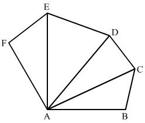
Solution:
Question:26
Find x, y, z (whichever is required) in the figures given below:
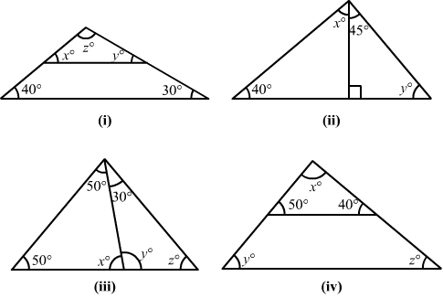
Solution:
.png)
.png)
.png)
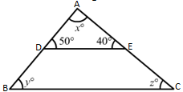
Question:27
If one angle of a triangle is 60° and the other two angles are in the ratio 1 : 2, find the angles.
Solution:
Question:28
If one angle of a triangle is 100° and the other two angles are in the ratio 2 : 3, find the angles.
Solution:
Question:29
In a ∆ABC, if 3∠A = 4 ∠B = 6 ∠C, calculate the angles.
Solution:
Question:30
Is it possible to have a triangle, in which
(i) two of the angles are right?
(ii) two of the angles are obtuse?
(iii) two of the angles are acute?
(iv) each angle is less than 60°?
(v) each angle is greater than 60°?
(vi) each angle is equal to 60°?
Give reasons in support of your answer in each case.
Solution:
(i) No, because if there are two right angles in a triangle, then the third angle of the triangle must be zero, which is not possible.
(ii) No, because as we know that the sum of all three angles of a triangle is always 180. If there are two obtuse angles, then their sum will be more than 180, which is not possible in case of a triangle.
(iii) Yes, in right triangles and acute triangles, it is possible to have two acute angles.
(iv) No, because if each angle is less than 60, then the sum of all three angles will be less than 180, which is not possible in case of a triangle.
Proof :
(v) No, because if each angle is greater than 60, then the sum of all three angles will be greater than 180, which is not possible.
Proof :
(vi) Yes, if each angle of the triangle is equal to 60, then the sum of all three angles will be 180, which is possible in case of a triangle.
Proof :
Question:31
In ∆ABC, ∠A = 100°, AD bisects ∠A and AD ⊥ BC. Find ∠B.
Solution:

Question:32
In ∆ABC, ∠A = 50°, ∠B = 70° and bisector of ∠C meets AB in D. Find the angles of the triangles ADC and BDC.
Solution:

Question:33
In ∆ABC, ∠A = 60°, ∠B = 80° and the bisectors of ∠B and ∠C meet at O. Find
(i) ∠C
(ii) ∠BOC.
Solution:

Question:34
The bisectors of the acute angles of a right triangle meet at O. Find the angle at O between the two bisectors.
Solution:

Question:35
In ∆ABC, ∠A = 50° and BC is produced to a point D. The bisectors of ∠ABC and ∠ACD meet at E. Find ∠E.
Solution:
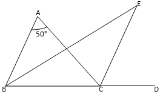
Question:36
In ∆ABC, ∠B = 60°, ∠C = 40°, AL ⊥ BC and AD bisects ∠A such that L and D lie on side BC. Find ∠LAD.
Solution:
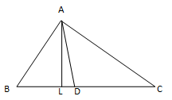
Question:37
Line segments AB and CD intersect at O such that AC || DB. If ∠CAB = 35° and ∠CDB = 55°, find ∠BOD.
Solution:
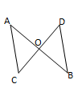
Question:38
In Fig., ∆
ABC is right angled at
A.
Q and
R are points on line
BC and
P is a point such that
QP ||
AC and
RP ||
AB. Find ∠
P.
.png)
Solution:
Question:39
In Fig., ∠CBX is an exterior angle of ∆ABC at B. Name
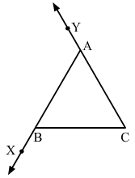
(i) the interior adjacent angle
(ii) the interior opposite angles to exterior ∠CBX.
Also, name the interior opposite angles to an exterior angle at A.
Solution:
Question:40
In Fig, two of the angles are indicated. What are the measures of ∠
ACX and ∠
ACB?
.png)
Solution:
Question:41
In a triangle, an exterior angle at a vertex is 95° and its one of the interior opposite angles is 55°. Find all the angles of the triangle.
Solution:
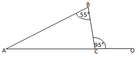
Question:42
One of the exterior angles of a triangle is 80°, and the interior opposite angles are equal to each other. What is the measure of each of these two angles?
Solution:
Question:43
The exterior angles, obtained on producing the base of a triangle both ways are 104° and 136°. Find all the angles of the triangle.
Solution:

Question:44
In Fig., the sides
BC,
CA and
BA of a ∆
ABC have been produced to
D,
E and
F respectively. If ∠
ACD = 105° and ∠
EAF = 45°; find all the angles of the ∆
ABC.
.png)
Solution:
Question:45
In Fig.,
AC ⊥
CE and ∠
A :∠
B : ∠
C = 3 : 2 : 1, find the value of ∠
ECD.
.png)
Solution:
Question:46
A student when asked to measure two exterior angles of ∆ABC observed that the exterior angles at A and B are of 103° and 74° respectively. Is this possible? Why or why not?
Solution:
Question:47
In Fig.,
AD and
CF are respectively perpendiculars to sides
BC and
AB of ∆
ABC. If ∠
FCD = 50°, find ∠
BAD.
.png)
Solution:
Question:48
In Fig., measures of some angles are indicated. Find the value of
x.
.png)
Solution:
Question:49
In Fig.,
ABC is a right triangle right angled at
A.
D lies on
BA produced and
DE ⊥
BC, intersecting
AC at
F. If ∠
AFE = 130°, find
.png)
(i) ∠
BDE
(ii) ∠
BCA
(iii) ∠
ABCSolution:
Question:50
ABC is a triangle in which ∠B = ∠C and ray AX bisects the exterior angle DAC. If ∠DAX = 70°, find ∠ACB.
Solution:
.png)
Question:51
The side BC of ∆ABC is produced to a point D. The bisector of ∠A meets side BC in L. If ∠ABC = 30° and ∠ACD = 115°, find ∠ALC.
Solution:
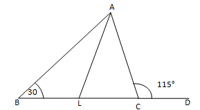
Question:52
D is a point on the side BC of ∆ABC. A line PDQ, through D, meets side AC in P and AB produced at Q. If ∠A = 80°, ∠ABC = 60° and ∠PDC = 15°, find (i) ∠AQD (ii) APD.
Solution:

Question:53
Explain the concept of interior and exterior angles and in each of the figures given below, find x and y.
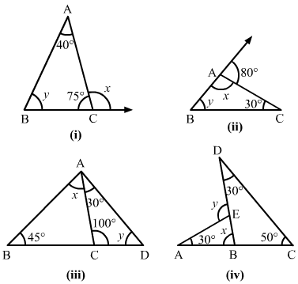
Solution:
The interior angles of a triangle are the three angle elements inside the triangle.
The exterior angles are formed by extending the sides of a triangle, and if the side of a triangle is produced, the exterior angle so formed is equal to the sum of the two interior opposite angles.
Using these definitions, we will obtain the values of x and y.
(i)
(ii)
Question:54
Compute the value of x in each of the following figures:
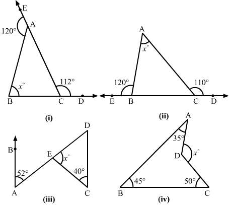
Solution:
Question:55
In each of the following, there are three positive numbers. State if these numbers could possibly be the lengths of the sides of a triangle:
(i) 5, 7, 9
(ii) 2, 10, 15
(iii) 3, 4, 5
(iv) 2, 5, 7
(v) 5, 8, 20
Solution:
(i) Yes, these numbers can be the lengths of the sides of a triangle because the sum of any two sides of a triangle is always greater than the third side.
Here,
(ii) No, these numbers cannot be the lengths of the sides of a triangle because the sum of any two sides of a triangle is always greater than the third side, which is not true in this case.
(iii) Yes, these numbers can be the lengths of the sides of a triangle because the sum of any two sides of triangle is always greater than the third side.
Here,
(iv) No, these numbers cannot be the lengths of the sides of a triangle because the sum of any two sides of a triangle is always greater than the third side, which is not true in this case.
Here,
(v) No, these numbers cannot be the lengths of the sides of a triangle because the sum of any two sides of a triangle is always greater than the third side, which is not true in this case.
Here,
Question:56
In Fig., P is the point on the side BC. Complete each of the following statements using symbol ' = ', '>' or '<' so as to make it true:
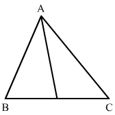
(i) AP ... AB + BP
(ii) AP .... AC + PC
(iii)
Solution:
(i) In triangle APB, AP < AB + BP because the sum of any two sides of a triangle is greater than the third side.
(ii) In triangle APC, AP < AC + PC because the sum of any two sides of a triangle is greater than the third side.
(iii) AP <
In triangles ABP and ACP, we can see that:
AP < AB + BP ...(i) (Because the sum of any two sides of a triangle is greater than the third side)
AP < AC + PC ...(ii) (Because the sum of any two sides of a triangle is greater than the third side)
On adding (i) and (ii), we have:
AP + AP < AB + BP + AC + PC
2AP < AB + AC + BC (BC = BP + PC)
AP <
Question:57
P is a point in the interior of ∆ABC as shown in Fig. State which of the following statements are true (T) or false (F):
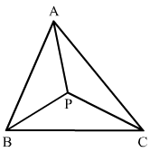
(i) AP + PB < AB
(ii) AP + PC > AC
(iii) BP + PC = BC
Solution:
(i) False
We know that the sum of any two sides of a triangle is greater than the third side; it is not true for the given triangle.
(ii) True
We know that the sum of any two sides of a triangle is greater than the third side; it is true for the given triangle.
(iii) False
We know that the sum of any two sides of a triangle is greater than the third side; it is not true for the given triangle.
Question:58
O is a point in the exterior of ∆
ABC. What symbol '>', '<' or '=' will you use to complete the statement
OA +
OB ..
AB? Write two other similar statements and shown that
Solution:
Because the sum of any two sides of a triangle is always greater than the third side, in triangle OAB, we have:
Question:59
In ∆ABC, ∠A = 100°, ∠B = 30°, ∠C = 50°. Name the smallest and the largest sides of the triangle.
Solution:
Because the smallest side is always opposite to the smallest angle, which in this case is 30o, it is AC.
Also, because the largest side is always opposite to the largest angle, which in this case is 100o, it is BC.
Question:60
State Pythagoras theorem and its converse.
Solution:
The Pythagoras Theorem: In a right triangle, the square of the hypotenuse is always equal to the sum of the squares of the other two sides.
Converse of the Pythagoras Theorem: If the square of one side of a triangle is equal to the sum of the squares of the other two sides, then the triangle is a right triangle, with the angle opposite to the first side as right angle.
Question:61
In right ∆ ABC, the lengths of the legs are given. Find the length of the hypotenuse.
(i) a = 6 cm, b = 8 cm
(ii) a = 8 cm, b = 15 cm
(iii) a = 3 cm, b = 4 cm
(iv) a = 2 cm, b = 1.5 cm
Solution:
According to the Pythagoras theorem,
Question:62
The hypotenuse of a triangle is 2.5 cm. If one of the sides is 1.5 cm, find the length of the other side.
Solution:
Question:63
A ladder 3.7 m long is placed against a wall in such a way that the foot of the ladder is 1.2 m away from the wall. Find the height of the wall to which the ladder reaches.
Solution:
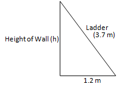
Question:64
If the sides of a triangle are 3 cm, 4 cm and 6 cm long, determine whether the triangle is right-angled triangle.
Solution:
Question:65
The sides of certain triangles are given below. Determine which of them are right triangles.
(i) a = 7 cm, b = 24 cm and c = 25 cm
(ii) a = 9 cm, b = 16 cm and c = 18 cm
Solution:
Question:66
Two poles of heights 6 m and 11 m stand on a plane ground. If the distance between their feet is 12 m, find the distance between their tops.
[Hint: Find the hypotenuse of a right triangle having the sides (11 − 6) m = 5 m and 12 m]
Solution:

Question:67
A man goes 15 m due west and then 8 m due north. How far is he from the starting point?
Solution:

Question:68
The foot of a ladder is 6 m away from a wall and its top reaches a window 8 m above the ground. If the ladder is shifted in such a way that its foot is 8 m away from the wall, to what height does its top reach?
Solution:
.png)
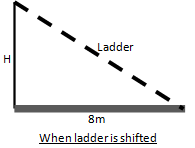
Question:69
A ladder 50 dm long when set against the wall of a house just reaches a window at a height of 48 dm. How far is the lower end of the ladder from the base of the wall?
Solution:
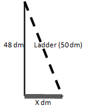
Question:70
The two legs of a right triangle are equal and the square of the hypotenuse is 50. Find the length of each leg.
Solution:
Question:71
Verify that the following numbers represent Pythagorean triplet:
(i) 12, 35, 37
(ii) 7, 24, 25
(iii) 27, 36, 45
(iv) 15, 36, 39
Solution:
We will check for a Pythagorean triplet by checking if the square of the largest side is equal to the sum of the squares of the other two sides.
Question:72
In a ∆ABC, ∠ABC = 100°, ∠BAC = 35° and BD ⊥ AC meets side AC in D. If BD = 2 cm, find ∠C and length DC.
Solution:
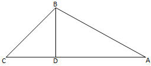
Question:73
In a ∆ABC, AD is the altitude from A such that AD = 12 cm, BD = 9 cm and DC = 16 cm. Examine if ∆ABC is right angled at A.
Solution:

Question:74
Draw a triangle ABC, with AC = 4 cm, BC = 3 cm and ∠C = 105°. Measure AB. Is (AB)2 = (AC)2 + (BC)2? If not, which one of the following is true:
(AB)2 > (AC)2 + (BC)2 or (AB)2 < (AC)2 + (BC)2?
Solution:
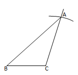
Draw .
Draw a line BC = 3 cm.
At point C, draw a line at 105 angle with BC.
Take an arc of 4 cm from point C, which will cut the line at point A.
Now, join AB, which will be approximately 5.5 cm.
(AB)2 (AC)2 + (BC)2
Here,
(AB)2 > (AC)2 + (BC)2
Question:75
Draw a triangle ABC, with AC = 4 cm, BC = 3 cm and ∠C = 80°. Measure AB. Is (AB)2 = (AC)2 + (BC)2? If not, which one of the following is true:
(AB)2 > (AC)2 + (BC)2 or (AB)2 < (AC)2 + (BC)2?
Solution:
First draw
.

Draw a line
BC = 3 cm.
At point
C, draw a line at 80
angle with
BC.
Take an arc of 4 cm from point
C, which will cut the line at point
A.
Now, join
AB; it will be approximately 4.5 cm.
(
AB)
2 (
AC)
2 + (
BC)
2
Here,
(
AB)
2 < (
AC)
2 + (
BC)
2
Question:76
If the measures of the angles of a triangle are (2x)° , (3x − 5)° and (4x − 13)°. Then the value of x is
(a) 22
(b) 18
(c) 20
(d) 30
Solution:
(2x)° + (3x − 5)∘ + (4x − 13)∘ = 180° [Angle sum property of triangle]
⇒ 2x + 3x − 5 + 4x − 13 = 180°
⇒ 9x − 18 = 180
⇒ 9x = 198
⇒ x = 22
Hence, the correct answer is option (a).
Question:77
The angles of a triangle are in the ratio 2 : 3 : 7. The measure of the largest angle is
(a) 84°
(b) 91°
(c) 105°
(d) 98°
Solution:
Let the angles of the triangle be 2x, 3x and 7x.
Now, 2x + 3x + 7x = 180° [Angle sum property of triangle]
⇒ 12x = 180°
⇒ x = 15°
∴ Largest angle = 7x = 7 × 15° = 105°
Hence, the correct answer is option (c).
Question:78
In a △ABC, if 2∠A = 3∠B = 6∠C, then th s measure of the smallest angle is
(a) 90°
(b) 60°
(c) 40°
(d) 30°
Solution:
We have
2∠A = 3∠B = 6∠C
∴ Smallest angle =
Hence, the correct answer is option (d).
Question:79
In a △ABC,if ∠A + ∠B = 150° and ∠B + ∠C = 75°, then ∠B =
(a) 35°
(b) 45°
(c) 55°
(d) 25°
Solution:
∠A + ∠B + ∠C = 180° [Angle sum property of triangle]
⇒ 150° + ∠C = 180°
⇒ ∠C = 30°
Now, ∠B + ∠C = 75°
⇒ ∠B + 30° = 75°
⇒ ∠B = 45°
Hence, the correct answer is option (b).
Question:80
In a △ABC, if ∠A − ∠B = 33° and ∠B − ∠C = 18°, then ∠B =
(a) 35°
(b) 45°
(c) 55°
(d) 25°
Solution:
∠A − ∠B = 33° and ∠B − ∠C = 18°
⇒ ∠A = ∠B + 33° and ∠C = ∠B − 18°
Now, ∠A + ∠B + ∠C = 180° [Angle sum property of triangle]
⇒ ∠B + 33° + ∠B + ∠B − 18° = 180°
⇒ 3∠B + 15° = 180°
⇒ 3∠B = 165°
⇒ ∠B = 55°
Hence, the correct answer is option (d).
Question:81
If the measures of the angles of a triangle are , then x =
(a)
(b)
(c)
(d)
Solution:
Hence, the correct answer is option (a).
Question:82
In Fig. 59, the value of
x is
(a) 84
(b) 74
(c) 94
(d) 57

Solution:
∠CAD = ∠ABC + ∠ACB [Exterior angle property]
⇒ 123° = 39° + x°
⇒ 84° = x°
⇒ x = 84
Hence, the correct answer is option (a).
Question:83
In Fig. 60, the values of x and y are
(a) x = 20, y = 130
(c) x = 20, y = 140
(b) x = 40, y = 140
(d) x = 15, y = 140
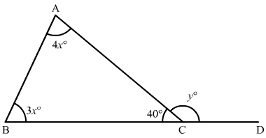
Solution:
∠ACB + ∠ACD = 180°
⇒ 40° + y° = 180°
⇒ y° = 140°
⇒ y = 140
Now, ∠ACD = ∠ABC + ∠BAC [Exterior angle property]
⇒ 3x° + 4x° = y°
⇒ 7x° = 140°
⇒ x = 20
Hence, the correct answer is option (c).
Question:84
In Fig. 61, the value of xis
(a) 72
(b) 50
(c) 58
(d) 48
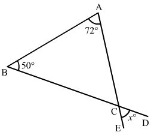
Solution:
∠A + ∠B + ∠C = 180° [Angle sum property of triangle]
⇒ 50° + 72° + ∠C = 180°
⇒ ∠C + 122° = 180°
⇒ ∠C = 58°
Now, x° = ∠C [Vertically opposite angles]
⇒ x° = 58°
⇒ x = 58
Hence, the correct answer is option (c).
Question:85
In Fig. 62, if AB || DE, then the value of x is
(a) 25
(b) 35
(c) 40
(d) 45
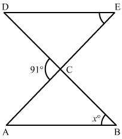
Solution:
∠ACD + ∠ACB = 180° [Linear angles]
⇒ 91° + ∠ACB = 180°
⇒ ∠ACB = 89°
Since, AB || DE
∠DEC = ∠CAB = 46° [Alternate angles]
Now,
∠ACB + ∠CAB + ∠ABC = 180° [Angle sum property of triangle]
⇒ 89° + 46° + x° = 180°
⇒ x° = 45°
⇒ x = 45
Hence, the correct answer is option (d).
Question:86
In Fig. 63, if AB || CD, the value of
x is
(a) 25
(b) 35
(c) 15
(d) 20

Solution:
Since, AB || DE
∠DCB = ∠CBA = 3x° [Alternate angles]
Now,
∠ACB + ∠CAB + ∠CBA = 180° [Angle sum property of triangle]
⇒ 55° + 2x° + 3x° = 180°
⇒ 5x° = 125°
⇒ x = 25
Hence, the correct answer is option (a).
Question:87
In Fig. 64, if AB || CD, the values of x and y are
(a) x = 21, y = 28
(b) x = 21, y = 38
(c) x = 38, y = 21
(d) x = 22, y = 38
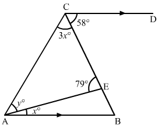
Solution:
∠AEC + ∠AEB = 180° [Linear angles]
⇒ 79° + ∠AEB = 180°
⇒ ∠AEB = 101°
Since, AB || CD
∠ABE = ∠ECD = 58° [Alternate angles]
Now, In △AEB
∠AEB + ∠EAB + ∠ABE = 180° [Angle sum property of triangle]
⇒ 101° + 58° + x° = 180°
⇒ x° = 21°
⇒ x = 21
Now, In △AEB
∠AEC + ∠CAE + ∠CEA = 180° [Angle sum property of triangle]
⇒ 79° + y° + 3x° = 180°
⇒ 79° + y° + 3(21)° = 180°
⇒ 79° + y° + 63° = 180°
⇒ y° = 38°
⇒ y = 38
Hence, the correct answer is option (b).
Question:88
In Fig. 65, if AB || CE, then the values of x and y are
(a) x = 26, y = 144
(b) x = 36, y = 154
(c) x = 154, y = 36
(d) x = 144, y = 26
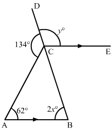
Solution:
∠DCA + ∠ACB = 180° [Linear angles]
⇒ 134° + ∠ACB = 180°
⇒ ∠ACB = 46°
Now, In △ABC
∠BAC + ∠ACB+ ∠ABC = 180° [Angle sum property of triangle]
⇒ 62° + 46° + 2x° = 180°
⇒ 2x° = 72°
⇒ x = 36
Since, AB || CE
∴ ∠ECB = ∠CBA= (2x)° = (2 × 36)° = 72° [Alternate angles]
Now, ∠DCE + ∠ECB = 180° [Linear angles]
⇒ y° + 72° = 180°
⇒ y = 108
Disclaimer: No Option is correct
Question:89
In Fig. 66, if AF || DE, then
x =
(a) 37
(b) 57
(c) 47
(d) 67

Solution:
Since, AF || DE
∠EDC = ∠ACB = 109° [Corresponding angles]
Now, In △ABC
∠ACB + ∠CAB + ∠CBA = 180° [Angle sum property of triangle]
⇒ 109° + 24° +
x° = 180°
⇒
x° = 47°
⇒
x = 47
Hence, the correct answer is option (c).
Question:90
In Fig. 67, the values of
x and
y are
(a)
x = 130,
y = 120
(b)
x = 120,
y = 130
(c)
x = 120,
y = 120
(d)
x = 130,
y = 130

Solution:
In △ABD
∠ADB + ∠BAD + ∠ABD = 180° [Angle sum property of triangle]
⇒ 61° + 59° + ∠ABD = 180°
⇒ ∠ABD = 60°
∠ABD + ∠DBC = 180° [Linear pair angles]
⇒ 60° + y° = 180°
⇒ y = 120
Now, ∠ADB = ∠GDE = 61° [Vertically opposite angles]
Now, In △GDE
∠GDE + ∠DGE + ∠GED = 180° [Angle sum property of triangle]
⇒ 61° + 69° + ∠GED = 180°
⇒ ∠GED = 50°
Now, ∠GED + ∠GEF = 180° [Linear pair angles]
⇒ 50° + x° = 180°
⇒ x = 130
Hence, the correct answer is option (a).
Question:91
In Fig. 68, the values of
x and
y are
(a)
x = 120,
y = 150
(b)
x = 110,
y = 160
(c)
x = 150,
y = 120
(d)
x = 110,
y = 160

Solution:
In △DEF
∠DEF + ∠DFE + ∠EDF = 180° [Angle sum property of triangle]
⇒ 110° + 40° + ∠EDF = 180°
⇒ ∠EDF = 30°
Now, ∠EDF + ∠FDA = 180° [Linear pair angles]
⇒ 30° + x° = 180°
⇒ x = 150
Now, ∠EDF = ∠ADB = 30° [Vertically opposite angles]
Now, In △ABD
∠ADB + ∠DAB + ∠ABD = 180° [Angle sum property of triangle]
⇒ 30° + 90° + ∠ABD = 180°
⇒ ∠ABD = 60°
Now, ∠ABD + ∠DBC = 180° [Linear pair angles]
⇒ 60° + y° = 180°
⇒ y = 120
Hence, the correct answer is option (c).
Question:92
In Fig. 69, if AB || CD, then the values of
x and
y are
(a)
x = 106,
y = 307
(b)
x = 307,
y = 106
(C)
x =107,
y = 306
(d)
x = 105,
y = 308

Solution:
In △CDE
∠CDE + ∠CED + ∠ECD = 180° [Angle sum property of triangle]
⇒ 53° + 53° + ∠ECD = 180°
⇒ ∠ECD = 74°
Since, AB || CD
∴ ∠ECD = ∠CGB = 74° [Corresponding angles]
Now, ∠CGB + ∠BGF = 180° [Linear pair angles]
⇒ 74° + x° = 180°
⇒ x = 106
Now, In △EGB
∠EGB + ∠BEG + ∠EBG = 180° [Angle sum property of triangle]
⇒ 74° + 53° + ∠EBG = 180°
⇒ ∠EBG = 53°
Now, ∠EBG + Reflex∠EBG = 360° [Complete angle]
⇒ 53° + y° = 360°
⇒ y = 307
Hence, the correct answer is option (a).
Question:93
In Fig. 70, if AB || CD, then the values of x and y are
(a) x = 24, y = 48
(b) x = 34, y = 68
(c) x = 24, y = 68
(d) x = 34, y = 48
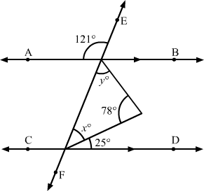
Solution:

∠AGE + ∠BGE = 180° [Linear pair angles]
⇒ 121° + ∠BGE = 180°
⇒ ∠BGE = 59°
Since, AB || CD
∴ ∠BGE = ∠GHD = 59° [Corresponding angles]
⇒
x° + 25° = 59°
⇒
x = 34
In △GHI
∠GHI + ∠GIH + ∠HGI = 180° [Angle sum property of triangle]
⇒ 34° + 78° +
y° = 180°
⇒
y = 68
Hence, the correct answer is option (b).
Question:94
In Fig. 71, if AB || CD, then the values of x, y and z are
(a) x = 56, y = 47, z = 77
(b) x = 47, y = 56, z = 77
(c) x = 77, y = 56, z = 47
(d) x = 56, y = 77, z = 47
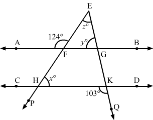
Solution:
∠AFE + ∠EFG = 180° [Linear pair angles]
⇒ 124° + ∠EFG = 180°
⇒ ∠EFG = 56°
Since, AB || CD
∴ ∠EFG = ∠FHK = 56° [Corresponding angles]
⇒ x = 56
Now, ∠QKH + ∠GKH = 180° [Linear pair angles]
⇒ 103° + ∠GKH = 180°
⇒ ∠GKH = 77°
Since, AB || CD
∴ ∠EGF = ∠GKH = 77° [Corresponding angles]
⇒ y = 77
In △EHK
∠EHK + ∠EKH + ∠HEK = 180° [Angle sum property of triangle]
⇒ 56° + 77° + z° = 180°
⇒ z = 47
Hence, the correct answer is option (d).
Question:95
If the exterior angles of a triangle are (2x + 10)°, (3x − 5)° and (2x + 40)°, then x =
(a) 25
(b) 35
(c) 45
(d) 55
Solution:
Sum of the exterior angles of a triangle is 360°
∴(2x + 10)°+ (3x − 5)° + (2x + 40)° = 360°
⇒ 2x + 10 + 3x − 5 + 2x + 40 = 360
⇒ 7x + 45 = 360
⇒ 7x = 315
⇒ x = 45
Hence, the correct answer is option (c)
Question:96
In Fig. 73, the value of
x is
(a) 20
(b) 30
(c) 40
(d) 25

Solution:
∠TRS + ∠TRQ = 180° [Linear angles]
⇒ 5x° + ∠TRQ = 180°
⇒ ∠TRQ = 180° − 5x°
Now, ∠QTR + ∠TRQ = ∠PQT [Exterior angle property of triangle]
⇒ 3x° + 180° − 5x° = 120°
⇒ 2x° = 60°
⇒ x = 30
Hence, the correct answer is option (b).
Question:97
In Fig. 74, if AB || CO, ∠CAB = 49°, ∠CBD = 27° and∠BDC = 112°, then the values of x and y are
(a) x = 41, y = 90
(b) x = 41,y = 63
(c) x = 63, y = 41
(d) x = 90, y = 41
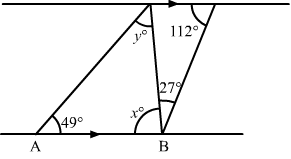
Solution:

Since, AB || CD
∠ABD + ∠CDB = 180° [Angles on the same side of a transversal line are supplementary]
⇒
x° + 27° + 112° = 180°
⇒
x° = 41°
⇒
x = 41
Now, In △ABC
∠A + ∠B + ∠C = 180° [Angle sum property of triangle]
⇒ 49° + 41°+
y° = 180°
⇒
y° = 90°
⇒
y = 90
Hence, the correct answer is option (a).
Question:98
Which of the following is the set of measures of the sides of a triangle?
(a) 8 cm, 4 cm, 20 cm
(b) 9 cm, 17 cm, 25 cm
(c) 11 cm, 16 cm, 28 cm
(d) None of these
Solution:
We knwno that Triangle Inequality Theorem states that the sum of two side lengths of a triangle is always greater than the third side.
Using this in (a), we get
8 + 4 ≯ 20
⇒ 12 ≯ 20
So, triangle is not possible
Using this in (b), we get
9 + 17 > 25
⇒ 26 > 25
and
9 + 25 > 7
⇒ 34 > 7
and
17 + 25 > 9
⇒ 42 > 9
So, triangle is possible.
Using this in (c), we get
11 + 16 ≯ 28
⇒ 27 ≯ 28
So, triangle is not possible.
Hence, the correct answer is option (b).
Question:99
In which of the following cases, a right triangle cannot be constructed?
(a) 12 cm, 5 cm, 13 cm
(b) 8 cm, 6 cm, 10 cm
(c) 5 cm, 9 cm, 11 cm
(d) None of these
Solution:
In (a)
122 + 52 = 132
⇒ 144 + 25 = 169
⇒ 169 = 169
Since, the sum of the square of two smallest side is equal to the square of largest side.
Hence, a right triangle can be constructed.
In (b)
82 + 62 = 102
⇒ 44 + 36 = 100
⇒ 100 = 100
Since, the sum of the square of two smallest side is equal to the square of largest side.
Hence, a right triangle can be constructed.
In (c)
52 + 92 ≠ 112
⇒ 25 + 81 ≠ 121
⇒ 106 ≠ 121
Since, the sum of the square of two smallest side is not equal to the square of largest side.
Hence, a right triangle can not be constructed.
Hence, the correct answer is option (c).
Question:100
Which of the following is/are not Pythagorean triplet (s)?
(a) 3,4,5
(b) 8,15,17
(c) 7,24,25
(d) 13,26,29
Solution:
In (a)
32 + 42 = 52
⇒ 9 + 16 = 25
⇒ 25 = 25
Since, the sum of the square of two smallest number is equal to the square of largest number.
Hence, it is a Pythagorean triplet.
In (b)
82 + 152 = 172
⇒ 64 + 225 = 289
⇒ 289 = 289
Since, the sum of the square of two smallest number is equal to the square of largest number.
Hence, it is a Pythagorean triplet.
In (c)
72 + 242 = 252
⇒ 49 + 576 = 625
⇒ 625 = 625
Since, the sum of the square of two smallest number is equal to the square of largest number.
Hence, it is a Pythagorean triplet.
In (d)
132 + 262 ≠ 292
⇒ 169 + 676≠ 841
⇒ 845 ≠ 841
Since, the sum of the square of two smallest number is not equal to the square of largest number.
Hence, it is not a Pythagorean triplet.
Hence, the correct answer is option (d).
Question:101
In a right triangle, one of the acute angles is four times the other. Its measure is
(a) 68°
(b) 84°
(c) 80°
(d) 72°
Solution:
Let the smallest angle be x, then the other angle be 4x.
Now,
x + 4x + 90° = 180°
⇒ 5x = 90°
⇒ x = 18°
Thus, the measure of the angles are 18°, and 4(18)° = 72°
Hence, the correct answer is option (d).
Question:102
In which of the following cases can a right triangle ABC be constructed?
(a) AB = 5 cm, BC = 7 cm, AC = 10 cm
(b) AB = 7 cm, BC = 8 cm, AC = 12 cm
(c) AB = 8 cm, BC = 17 cm, AC = 15 cm
(d) None of these
Solution:
In (c)
BC2 = AC2 + AB2
⇒ (17)2 = (15)2 + (8)2
⇒ 289 = 225 + 64
⇒ 289 = 289
Since, the sum of the square of two smallest side is equal to the square of largest side.
Hence, ABC is a right angle triangle at A.
Hence, the correct answer is option (c).
Question:103
△ ABC is a right triangle right angled at A. If AB = 24 cm and AC = 7 cm, then BC =
(a) 31 cm
(b) 17 cm
(c) 25 cm
(d) 28 cm
Solution:
In right traingle ABC,
BC2 = AC2 + AB2
⇒ BC2 = (7)2 + (24)2
⇒ BC2 = 49 + 576
⇒ BC2 = 625
⇒ BC2 = (25)2 2√)2
⇒ BC = 25 cm
Hence, the correct answer is option (c).
Question:104
If △ABC is an isosceles right-triangle right angled at C such that AC = 5 cm. Then, AB =
(a) 2.5cm
(b) cm
(c) 10 cm
(d) 5 cm
Solution:
Suppose BC is the ladder which is placed againts the wall OA. The foot of the ladder C is 15 m away from the foot O of the wall and its top reaches the window which is 20 m above the ground.
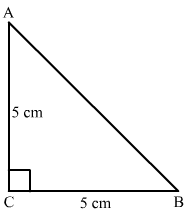
In right traingle ABC,
AB2 = BC2 + AC2
⇒ AB2 = (5)2 + (5)2
⇒ AB2 = 25 + 25
⇒ AB2 = 50
⇒ AB2 =
⇒ AB = cm
Hence, the correct answer is option (b).
Question:105
Two poles of heights 6 m and 11 m stand vertically on a plane ground. If the distance between their feet is 12 m, the distance between their tops is
(a) 13 m
(b) 14 m
(c) 15 m
(d) 12.8 m
Solution:
Suppose AB and CD are two poles.The is distance between AB and CD is 12 m.
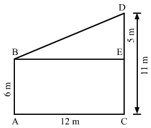
In right traingle BDE,
BD2 = DE2 + BE2
⇒ BD2 = (5)2 + (12)2
⇒ BD2 = 25 + 144
⇒ BD2 = 169
⇒ BD2 = (13)2(52√)2
⇒ BD = 13 m
Hence, the correct answer is option (a).
Question:106
A ladder is placed in such a way that its foot is 15 m away from the wall and its top reaches a window 20 m above the ground. The length of the ladder is
(a) 35 m
(b) 25 m
(c) 18 m
(d) 17.5 m
Solution:
Suppose BC is the ladder which is placed againts the wall OA. The foot of the ladder C is 15 m away from the foot O of the wall and its top reaches the window which is 20 m above the ground.

In right traingle BOC,
BC
2 = OC
2 + OB
2
⇒ BC
2 = (15)
2 + (20)
2
⇒ BC
2 =
225 + 400
⇒ BC
2 = 625
⇒ BC
2 = (25)
2
⇒ BC = 25 m
Hence, the correct answer is option (b).
Question:107
The hypotenuse of a right triangle is 26 cm long. If one of the remaining two sides is 10 cm long, the length of the other side is
(a) 25 cm
(b) 23 cm
(c) 24 cm
(d) 22 cm
Solution:

In right traingle BOC,
BC
2 = OC
2 + OB
2
⇒ (26)
2 = (10)
2 + OB
2
⇒ 676 =
100 + OB
2
⇒ OB
2 = 576
⇒ OB
2 = (24)
2
⇒ OB = 24 cm
Hence, the correct answer is option (c).
Question:108
A 15 m long ladder is placed against a wall in such away that the foot of the ladder is 9 m away from the wall. Up to what height does the ladder reach the wall?
(a) 13 m
(b) 10 m
(c) 8 m
(d) 12 m
Solution:
Suppose BC is the ladder having length 15 m is placed againts the wall OA. The foot of the ladder C is 9 m away from the foot of the wall O.

In right traingle BOC,
BC
2 = OC
2 + OB
2
⇒ (15)
2 = (9)
2 + OB
2
⇒ 225 =
81 + OB
2
⇒ OB
2 = 144
⇒ OB
2 = (12)
2
⇒ OB = 12 m
Hence, the correct answer is option (d).